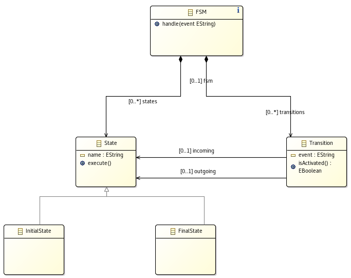
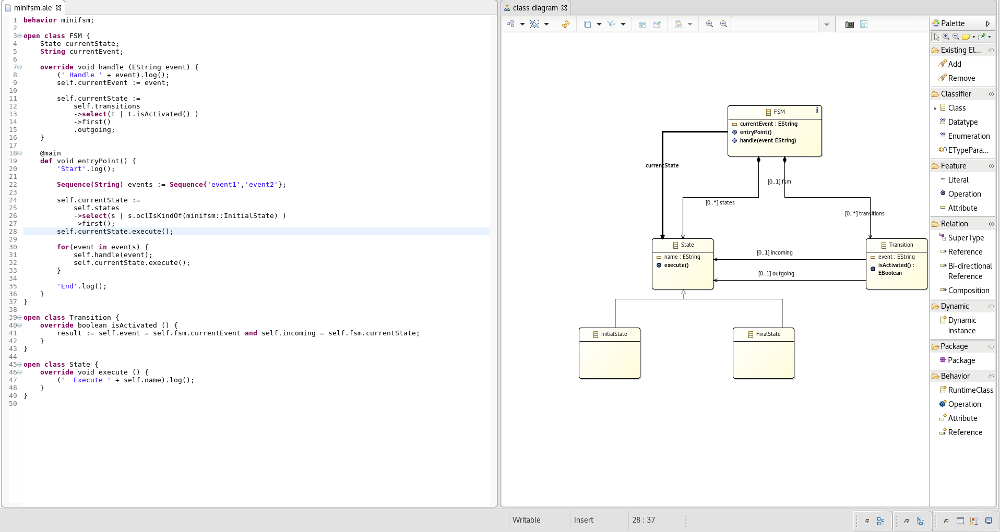
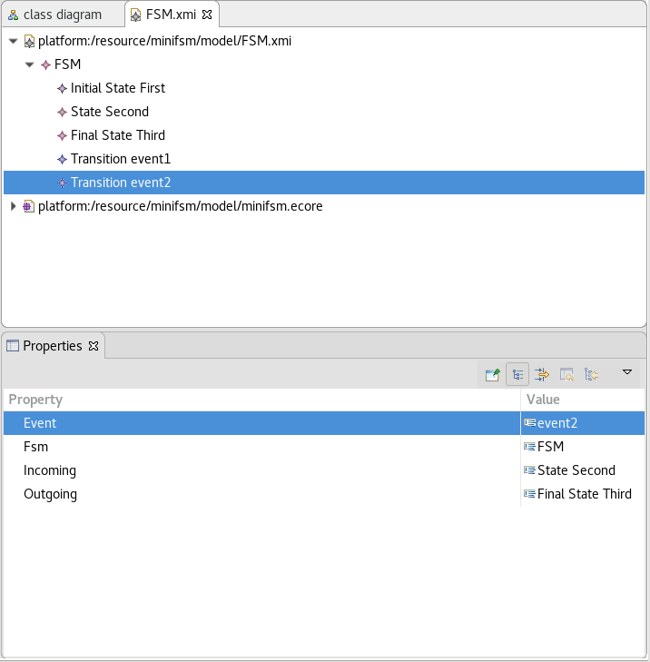

Mini-FSM Tutorial
Objectives
- Learn how to make an Ecore model executable.
This is not a tutorial about EMF and some basic knowledge is expected. You can learn more about EMF on Vogella or on EclipseSource
Introduction
For this first tutorial we’ll implement a simple FSM. So, what is it?
[A FSM] is a mathematical model of computation. It is an abstract machine that can be in exactly one of a finite number of states at any given time. The FSM can change from one state to another in response to some external inputs; the change from one state to another is called a transition. A FSM is defined by a list of its states, its initial state, and the conditions for each transition.

Basically, it is a system which can be in different states, which behaves differently according to its current state and transition from one state to another upon certain events.
1. Import the minifsm example project
The minifsm example project defines a simple FSM metamodel with no behavior. To import it in the workspace:
File > New > Example...EcoreTools ALE Examples > Tutorials- Select
minifsm Finish
The metamodel defined in this project is the following:

We are now going to define its behavior.
The Sirius integration provides handy features to both visualize and edit behavioral elements directely from a Sirius representation.
2. What do we want?
Let’s pause for a moment and think about what we want to achieve exactly. Basically, we have the following behaviors to implement:
- state to state transition
- state execution
3. Behavior implementation
First of all, to check whether a transition can be activated we have to keep track of the current event. Open the minifsm.ale file and add a currentEvent attribute to FSM:
behavior minifsm;
open class FSM {
String currentEvent;
}
We can now implement Transition.isActivated as follows:
open class Transition {
override boolean isActivated() {
boolean isRelatedToCurrentState := self.incoming = self.fsm.currentState
boolean isExpectedEvent := self.fsm.currentEvent = self.event;
result := isRelatedToCurrentState and isExpectedEvent;
}
}
We are checking that:
- the event triggered by the Transition is the same as the current event handle by the FSM,
- the incoming State from the Transition is the current State of the FSM.
The content of the variable result will be returned at the end of isActivated.
The variable self refers to the current object (here it is a Transition).
In a similar way we implement State.execute:
open class State {
override void execute() {
(' Execute ' + self.name).log();
}
}
The log method is used to print an object.
And for the implementation of FSM.handle:
open class FSM {
override void handle (EString event) {
(' Handle ' + event).log();
self.currentEvent := event;
self.currentState :=
self.transitions
->select(t | t.isActivated())
->first()
.outgoing;
}
}
Here we simply update currentEvent, search for an activated Transition and update currentState accordingly.
4. Entry point definition
To complete the behavior of our language, we will now define an entry point to run an FSM.
Create a new method annotated with @main in FSM:
open class FSM {
@main
def void run() {
}
}
The main tag indicates that this method will be automatically called when executing an FSM.
Here we will create a sequence of 2 events, initialize FSM’s current state with an initial state and then forward the events to the FSM:
open class FSM {
@main
def void run() {
'Start'.log();
Sequence(String) events := Sequence{'event1','event2'};
self.currentState :=
self.states
->select(s | s.oclIsKindOf(minifsm::InitialState))
->first();
self.currentState.execute();
for(event in events) {
self.handle(event);
self.currentState.execute();
}
'End'.log();
}
}
The complete example should look as follows:

5. Create a dynamic instance
Before testing our implementation we need an actual FSM model:
- Select
Dynamic > Dynamic instance - Click on
FSM - Name it
FSM.xmiand clickFinish - In the automatically opened
FSM.xmi, right click onFSMand selectNew Child > States Initial State - Name it
Firstin thePropertiesview - Create a child
StatenamedSecondand aFinal StatenamedThird - Create a
Transitionand edit the propertiesEventtoevent1,IncomingtoFirstandOutgoingtoSecond - Add another
TransitionfromSecondtoThirdwithevent2
Your FSM model should look like:

6. Run!
Now we can test!
- Right click on
minifsm.dsl - Select
Run As > ALE launch - Enter
*xmi - Select
FSM.xmi - Then click
OK
Console output:
Run minifsm.dsl
------------
Start
Execute First
Handle event1
Execute Second
Handle event2
Execute Third
End
Conclusion
Congratulations, you created an executable language from scratch!
Given an Ecore metamodel you implemented its EOperations with ALE and you run it on an FSM model.